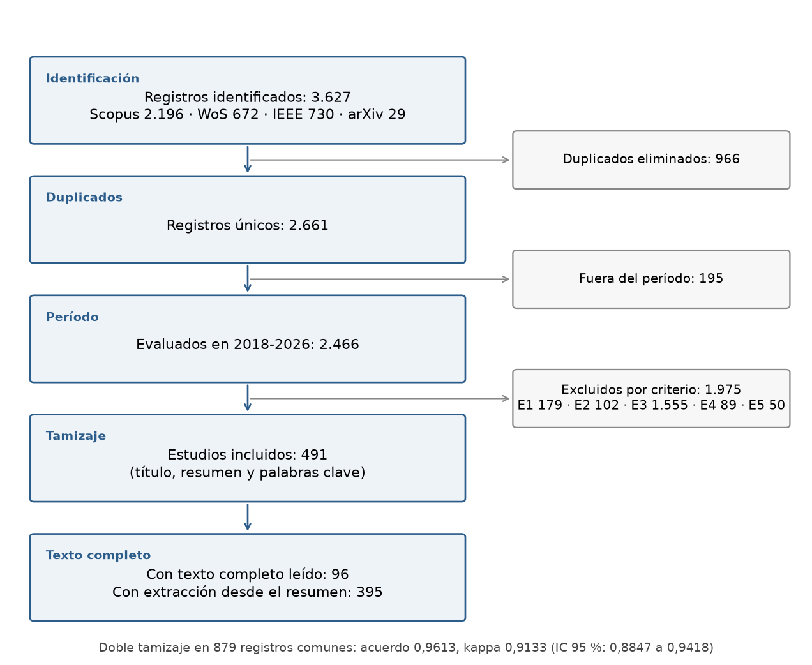

3.1 Estrategia de búsqueda#
Buscamos estudios que pronostiquen con redes neuronales series de abastecimiento, producción, precios o demanda de alimentos. Cada autor buscó y tamizó por su cuenta, con criterios de inclusión (I1-I4) y de exclusión (E1-E6) escritos antes de empezar. Después unimos los dos tamizajes y resolvimos los desacuerdos uno por uno. Las cadenas de búsqueda, los criterios, las reglas de decisión y el uso de la herramienta de IA están en los dos protocolos de los anexos.
Bases: Scopus, Web of Science, IEEE Xplore y arXiv.
Período: 2018 a 2026. El corte se fijó después de tamizar; sin él entrarían 52 estudios más y las tres familias más mencionadas serían las mismas, en el mismo orden (capítulo siguiente).
Unidad de conteo: el estudio. Una familia de redes cuenta una vez por estudio, se mencione como modelo propuesto o como comparación.
Diagrama de flujo#


Figura 1 Flujo de registros desde la identificación hasta el conjunto incluido. Fuente:
literatura/tamizaje_conjunto_conteos.json y literatura/conteo_modelos_conjunto.json; figura de
literatura/scripts_camilo/diagrama_prisma.py.#
De 3.627 registros quedaron 491 estudios. La mayor parte de las exclusiones (1.555) cae en E3: la variable pronosticada no es una magnitud agroalimentaria de mercado (rendimiento de cultivos, clima, energía, productos no alimentarios, entre otras). Los duplicados (E6) se retiraron antes del tamizaje y aparecen en el diagrama como duplicados eliminados. El doble tamizaje sobre los 879 registros que evaluamos los dos tuvo un kappa de 0,9133, con un intervalo de 0,8847 a 0,9418. Los 39 desacuerdos se resolvieron por escrito: 5 quedaron fuera del período y los 34 restantes se decidieron caso por caso (21 incluidos, 13 excluidos).
Leímos el texto completo de 96 de los 491 estudios. Para los otros 395, la familia de redes se tomó del título, el resumen y las palabras clave. La sección 3.2 muestra que el resultado no cambia entre esos cortes.